Thao Nguyen (Shibe)
|
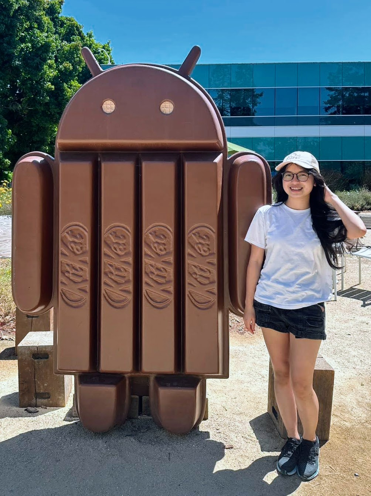 |
Hi, I'm Thao! 👋
I’ll be on the job market for Research Scientist/Engineer positions starting in 2027. thao.nguyen@wisc.edu 🤗 |
About Me
4th year PhD Student – Univeristy of Wisconsin - Madison.
Contact: thao.nguyen at wisc dot edu | thao.ntp0414 at gmail dot com.
Research interests: Personalized AI; MLLMs;
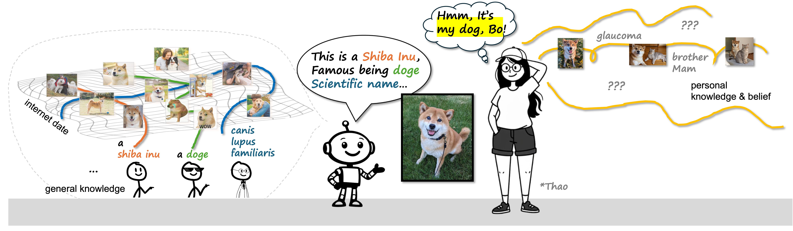
Publications [my favorites | still my favorites, but all ]
|
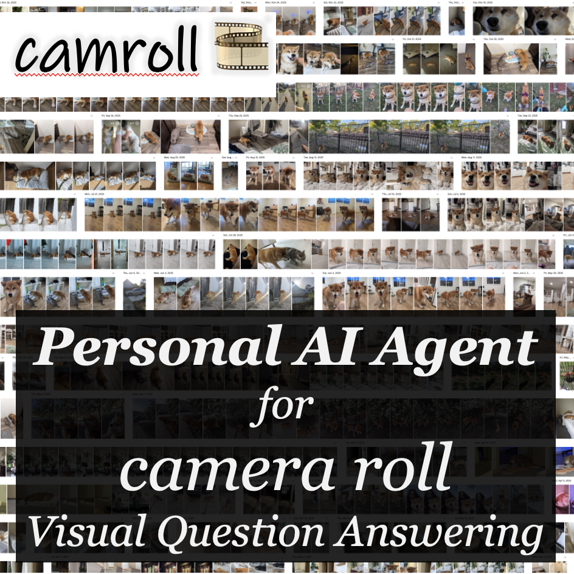 |
Personal AI Agent for Camera Roll VQA |
|
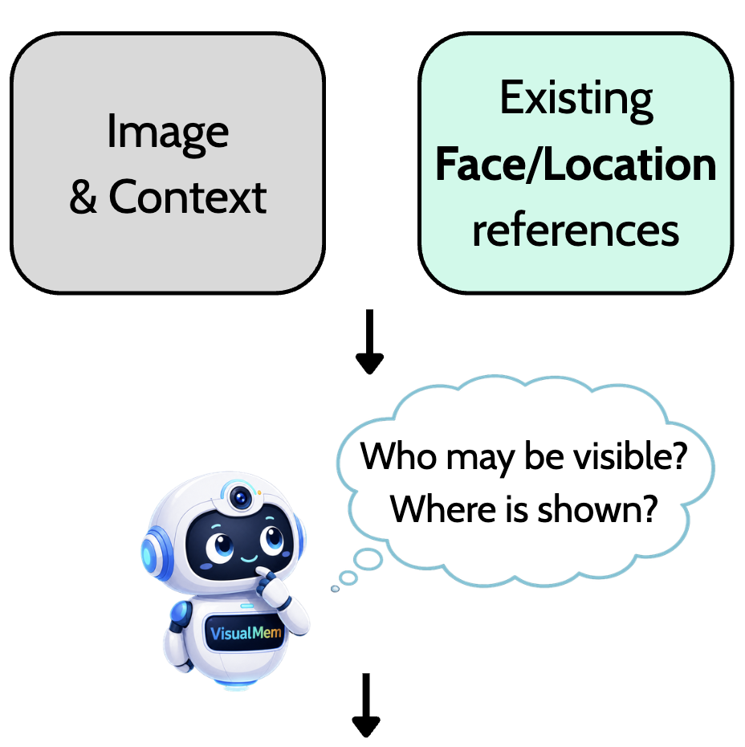 |
VisualMem: Personal Visual Memory from Explicit and Implicit Evidence |

|
Group Diffusion: Enhancing Image Generation by Unlocking Cross-Sample Collaboration |

|
Relational Visual Similarity |
|
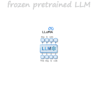 |
X-Fusion: Introducing New Modality to Frozen Large Language Models |

|
Yo'Chameleon: Personalized Vision and Language Generation |
|
Yo'LLaVA: Your Personalized Language and Vision Assistant |
|
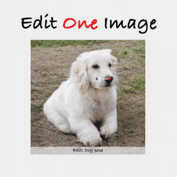 |
Edit One for All: Interactive Batch Image Editing |

|
Visual Instruction Inversion: Image Editing via Visual Prompting |

|
Lipstick ain't enough: Beyond Color Matching for In-the-Wild Makeup Transfer |
Not CS publication :D
|
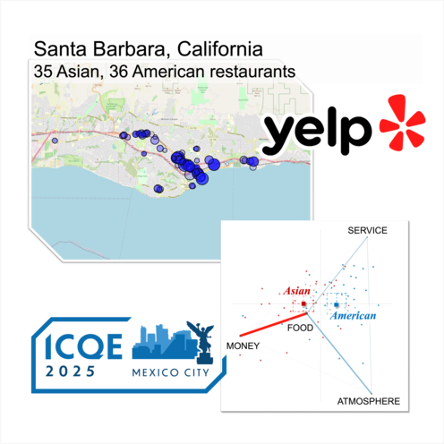 |
Are Dining Expectations Culturally Conditioned? An analysis of Asian vs. American Restaurants (yes, it's not a CS conference :D) |
Outreach & Side Project(s)
 vietnamese women 🇻🇳
vietnamese women 🇻🇳Or, if you're curious, I talked about my "expected" unexpected PhD experience in
Misc
|
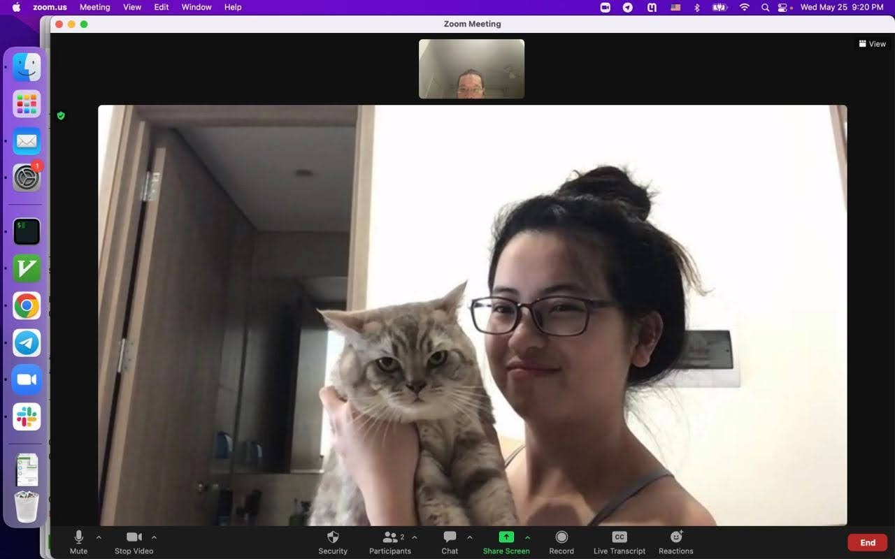 |
"🎉 Bo and Mam have appeared on multiple figures of my papers. Can you spot them? 😉" 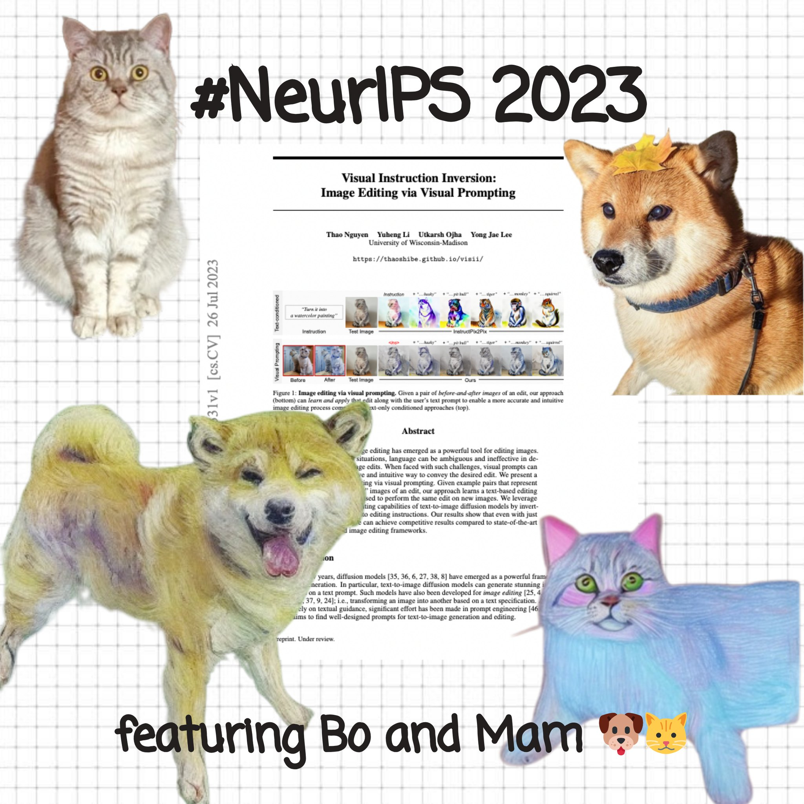 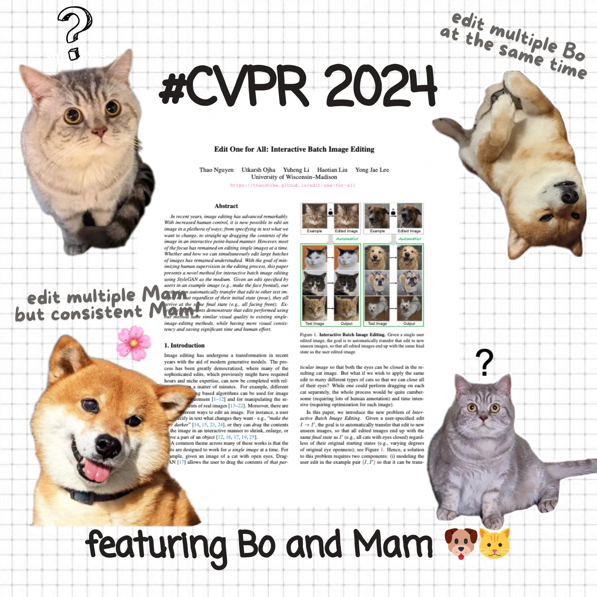 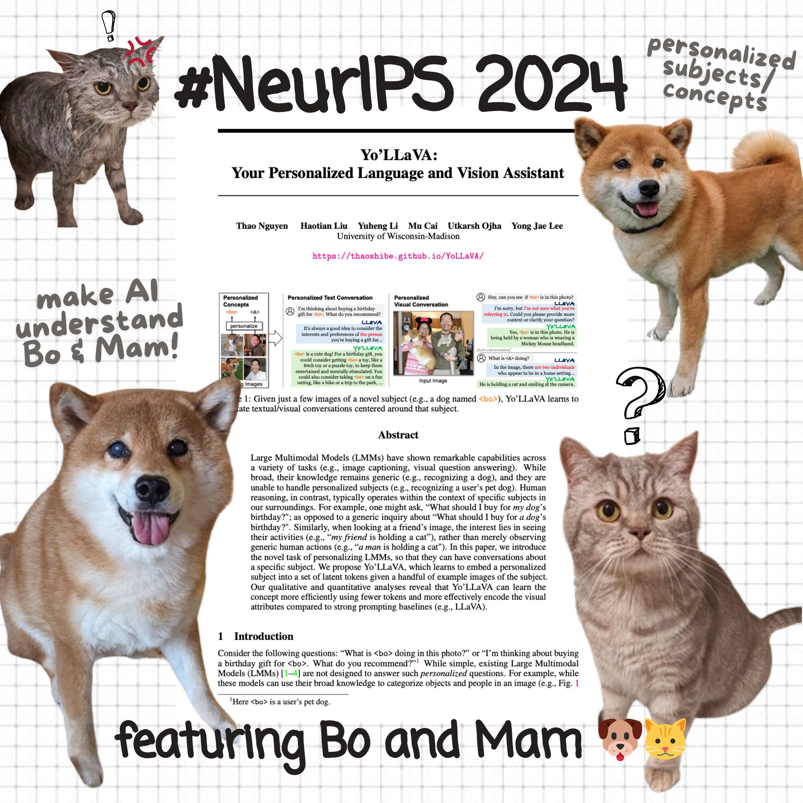 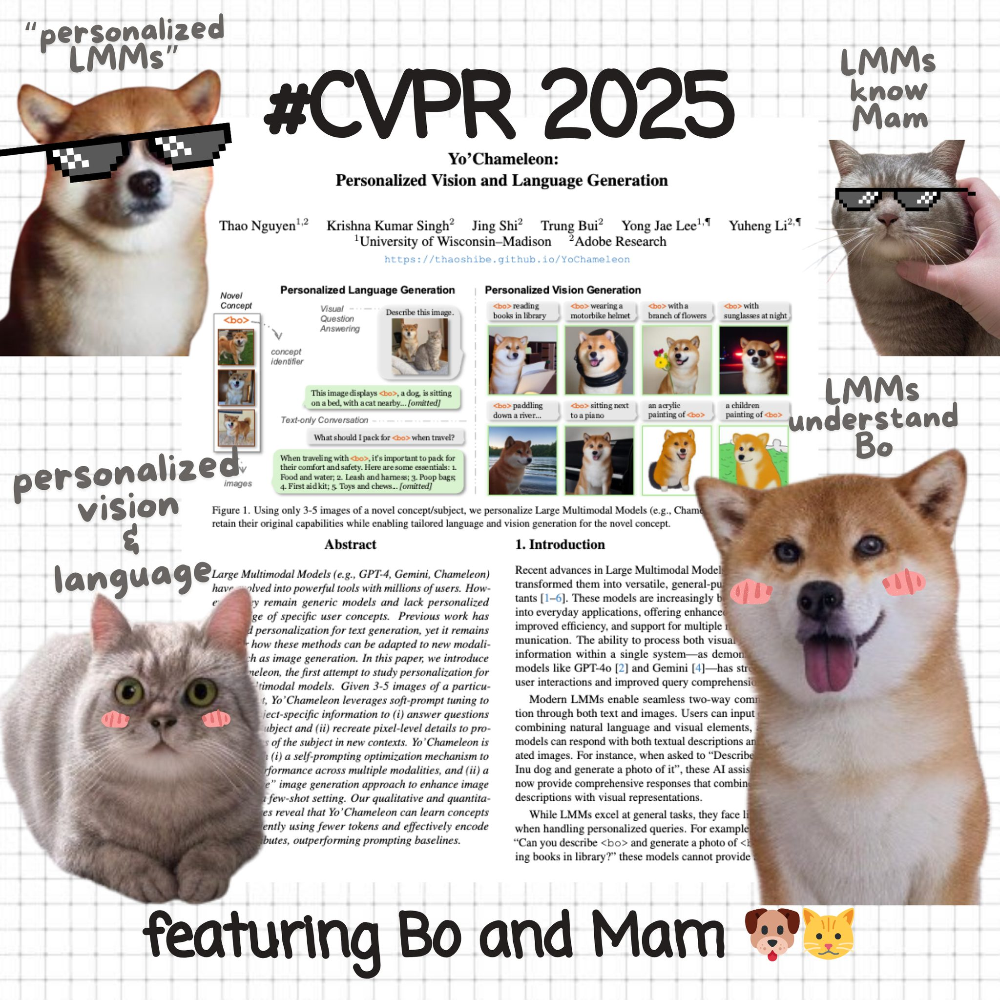 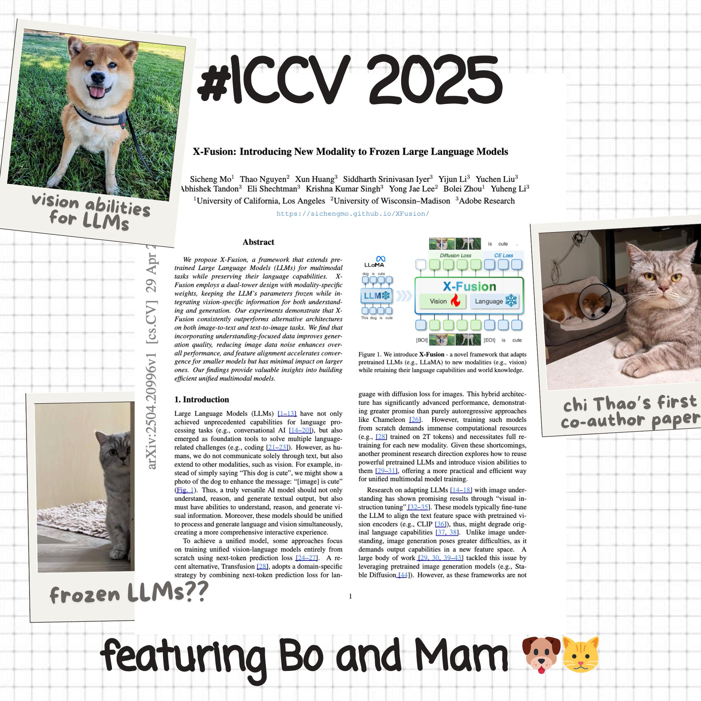 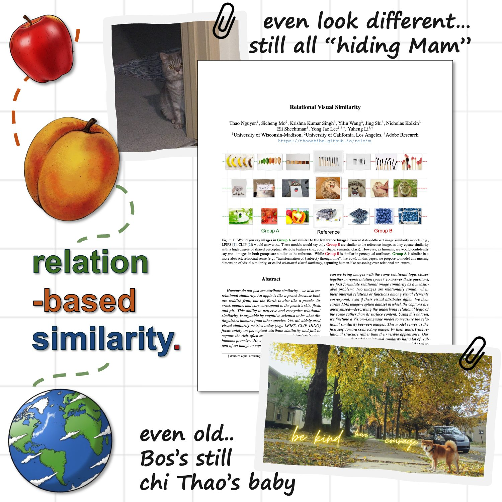 |

{kind=link}
{kind=link}
{kind=link}
{kind=link}